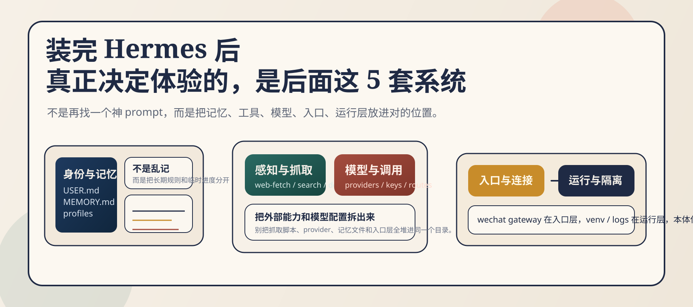
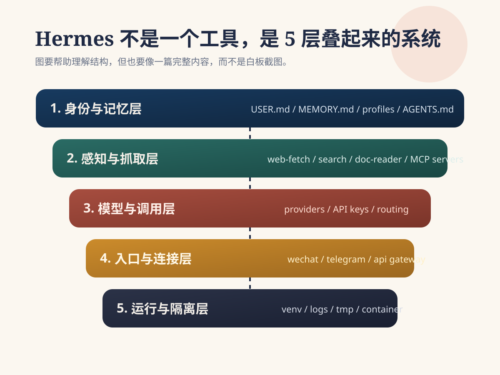
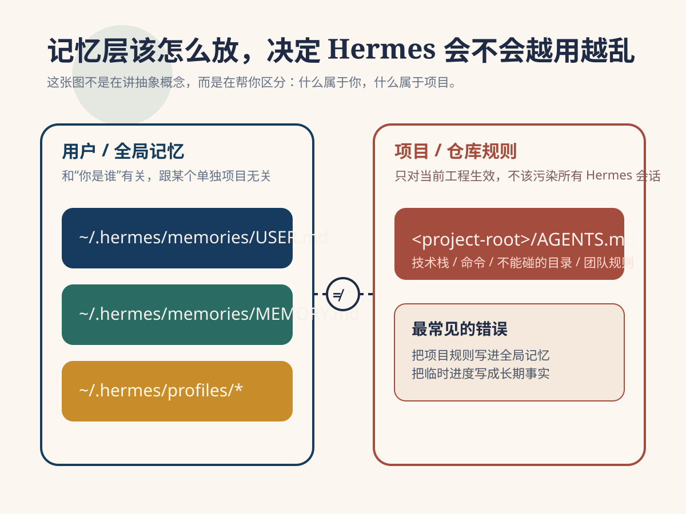
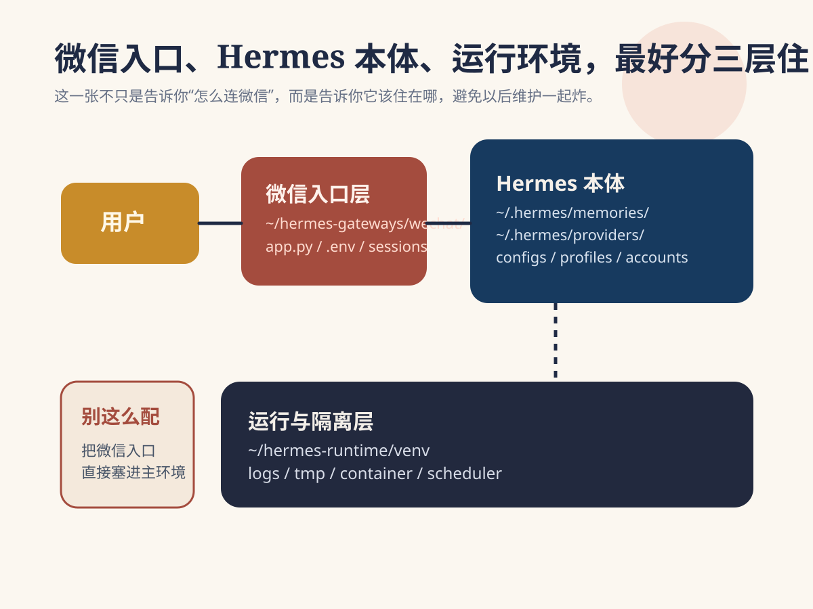

很多人第一次装好 Hermes，都会有一种错觉：
“已经能跑起来了，后面慢慢用就行。”
但真到开始高频使用时，问题马上就会出来：
这时候你会发现，Hermes 裸装版和真正能长期用的 Hermes，根本不是一回事。
差距不在模型本身，而在于你有没有把它背后的系统补齐。
更关键的是，很多文章会讲“要配长期记忆、要接微信、要加感知能力”，但不会直接告诉你：
这些东西到底应该装在哪。
这篇就把这件事讲清楚。
不是泛泛聊概念，而是直接回答一个更实用的问题：
Hermes 后面那几套关键系统，分别应该放在哪一层、哪个目录、哪个入口。

先把最常用的两个官方链接放前面，方便你边看边配：
uv 官方仓库：https://github.com/astral-sh/uv如果你想让 Hermes 长期稳定可用，我建议把整套系统按下面这 5 层来理解：
这 5 层不要混着放。
很多人后面越配越乱，本质上就是把“该放在配置目录里的东西”塞进了项目目录，把“该独立运行的服务”塞进了 Hermes 主环境，再把“该放入口层的东西”当成了核心逻辑层。
最稳的做法，是一开始就分层。

如果你只想先抓重点，先看这张总表：
| 系统 | 作用 | 推荐安装/放置位置 |
|---|---|---|
| 身份与记忆 | 让 Hermes 记住你、记住偏好、记住长期规则 | ~/.hermes/memories/、~/.hermes/profiles/、项目根目录的 AGENTS.md |
| 感知与抓取 | 让 Hermes 能读网页、读文档、读外部资料 | 独立工具目录，例如 ~/hermes-tools/，再通过 MCP / CLI 接到 Hermes |
| 模型与调用 | 接 OpenAI / Claude / Gemini 等模型 | 环境变量、provider 配置文件、Hermes 的模型配置目录 |
| 入口与连接 | 微信、Telegram、Webhook、聊天入口 | 独立接入服务目录，例如 ~/hermes-gateways/wechat/ |
| 运行与隔离 | 保证环境稳定、依赖不打架 | 独立虚拟环境，例如 ~/hermes-runtime/venv/ 或单独容器 |
你可以把它理解成一句话：
记忆放配置层，抓取放工具层，模型放 provider 层，微信放入口层，环境放运行层。
下面展开讲。
这是最容易被配乱的一层。
很多人会把自己的偏好、项目规则、临时进度、长期习惯，全都随手扔进一个文件里。结果就是：
更稳的放法是分三类。
比如：
这类内容建议放在：
~/.hermes/memories/USER.md
或者等价的用户级 profile 文件里。
这层的特点是：\ 和某个单一项目无关，而是和“你这个人”有关。
比如：
这类内容建议放在：
~/.hermes/memories/MEMORY.md
这层更像 Hermes 的长期工作笔记。
如果你想看 Hermes 官方对不同记忆 provider 的说明，可以直接看这里：
比如：
这类内容不要放在全局记忆里。
它应该放在项目根目录：
<project-root>/AGENTS.md
或者你项目里专门的项目规则文件中。
这一步非常重要。
因为很多人一上来就把项目规则写进全局记忆，结果换项目时 Hermes 还带着旧习惯工作，越用越乱。
~/.hermes/
memories/
USER.md
MEMORY.md
profiles/
main/
research/
content/
<project-root>/
AGENTS.md这里的逻辑是：
USER.md 记你是谁MEMORY.md 记 Hermes 学到了什么profiles/ 记不同分身AGENTS.md 记这个项目自己的规则如果你准备把外部长期记忆接进来，这几个链接最值得放进收藏夹：

很多人想给 Hermes 加网页抓取、搜索、文档读取能力时，第一反应是：
“是不是直接装进 Hermes 就行？”
不建议这么做。
因为这类能力本质上不是“记忆”，也不是“模型”，而是外部工具能力。
最稳的方式，是把它们放进一个独立工具层，再接给 Hermes。
推荐做法是单独建目录：
~/hermes-tools/
里面再按能力拆：
~/hermes-tools/
web-fetch/
search/
doc-reader/
notes-sync/然后通过下面任一方式接入 Hermes：
如果你准备走 MCP 这条路，最常用的官方入口是：
为什么要单独放？
因为抓取能力更新频率高，依赖复杂，最容易和主环境打架。
如果你把它们全部混装进 Hermes 主运行环境，后面一升级，坏的通常不是单个抓取工具，而是整套系统。
不要把下面这些东西直接当成记忆系统的一部分：
它们不是记忆本身。
它们是记忆和推理的“上游供给层”。
所以它们应该住在工具层，而不是住进 ~/.hermes/memories/。
第三层是模型。
这里最常见的错误，是把各种 key、provider 地址、默认模型、fallback 模型，直接写死在启动脚本里。
短期看好像方便，长期一定会出问题。
更稳的方式是把模型调用独立成一层，至少做到两件事：
放进环境变量，例如：
OPENAI_API_KEY
ANTHROPIC_API_KEY
GEMINI_API_KEY放到 Hermes 的配置目录，或者 provider 配置文件中。
如果你自己维护多模型路由，建议单独放在：
~/.hermes/providers/
例如：
~/.hermes/
providers/
default.yaml
fallback.yaml
cheap-models.yaml这样做的好处是，你后面要换模型、换路由、换默认策略时，不需要动主逻辑文件。
模型接入属于 provider 层，不属于业务层。
也就是说：
模型应该是可替换的。
否则后面你想做：
就会非常痛苦。
这是很多人最容易误判的一层。
大家都想把 Hermes 接进微信，但微信入口并不等于 Hermes 本体。
更准确地说：
微信是 Hermes 的入口层，不是 Hermes 的核心层。
所以最好的方式，不是把微信逻辑硬塞进主项目里，而是做成一个独立 gateway。
推荐放在：
~/hermes-gateways/wechat/
目录大概可以长这样：
~/hermes-gateways/
wechat/
app.py
.env
webhook/
sessions/如果你后面还想接别的入口，也按这个思路来：
~/hermes-gateways/
wechat/
telegram/
api/因为入口层解决的是这些问题：
这些都不是 Hermes 核心推理逻辑。
如果你把它和主逻辑混在一起，后面一旦微信那边变动，你就会被迫一起动 Hermes 本体。
这会让维护成本直线上升。
如果你是按微信入口来配，最值得直接参考的是 Hermes 的 Weixin 文档：
里面已经明确写了几件关键事：
hermes gateway setup~/.hermes/weixin/accounts/~/.hermes/.envhermes gateway
你接的是“入口”，不是“本体”。
所以微信适合放在：
.env而不是放进 ~/.hermes/memories/ 或 Hermes 主运行目录里。
最后这一层最不显眼，但最决定长期稳定性。
如果你前面四层都配得不错，但运行层一团乱，最后一样会崩。
最常见的错误是：
长期看，这基本必炸。
给 Hermes 单独准备运行环境，例如：
~/hermes-runtime/
里面再放：
~/hermes-runtime/
venv/
logs/
tmp/如果你用容器，也一样遵循这个原则：
因为这一层负责的是：
它和记忆层、入口层、工具层都不是一回事。
最怕的就是所有东西都堆在一个目录里，最后你连哪部分坏了都分不清。
这是我更推荐的一种长期可维护布局：
~/
.hermes/
memories/
USER.md
MEMORY.md
profiles/
main/
research/
content/
providers/
default.yaml
fallback.yaml
hermes-runtime/
venv/
logs/
tmp/
hermes-tools/
web-fetch/
search/
doc-reader/
hermes-gateways/
wechat/
.env
app.py
sessions/
<project-root>/
AGENTS.md这个结构最大的好处是：
很多人看完文章，最想知道的其实不是原理，而是“我第一步该点哪里”。
那就先从这两个开始：
https://github.com/NousResearch/hermes-agent
这是 Hermes 本体。
你后面无论是：
README基本都绕不开这个仓库。
uv 官方仓库https://github.com/astral-sh/uv
如果你准备按“独立环境、不污染系统 Python”的方式装 Hermes，那么 uv 基本就是最省心的起点。
你可以把它理解成：
先用 uv 把环境隔离干净，再把 Hermes 装进去。
Hermes 真正难的，不是“装上它”。
而是装完之后，你有没有把它放进一个长期可维护的结构里。
如果你只是想体验一下，裸装当然够。
但如果你想把它接进日常工作流，真正开始承担记忆、抓取、模型调用、微信入口这些任务，那最重要的不是再找一个神 prompt，而是先把这 5 套系统放对位置。
说得更直白一点：
记忆归记忆，工具归工具，模型归模型，微信归微信，环境归环境。
只要这件事一开始就分清楚，后面的 Hermes 基本就不会越配越乱。